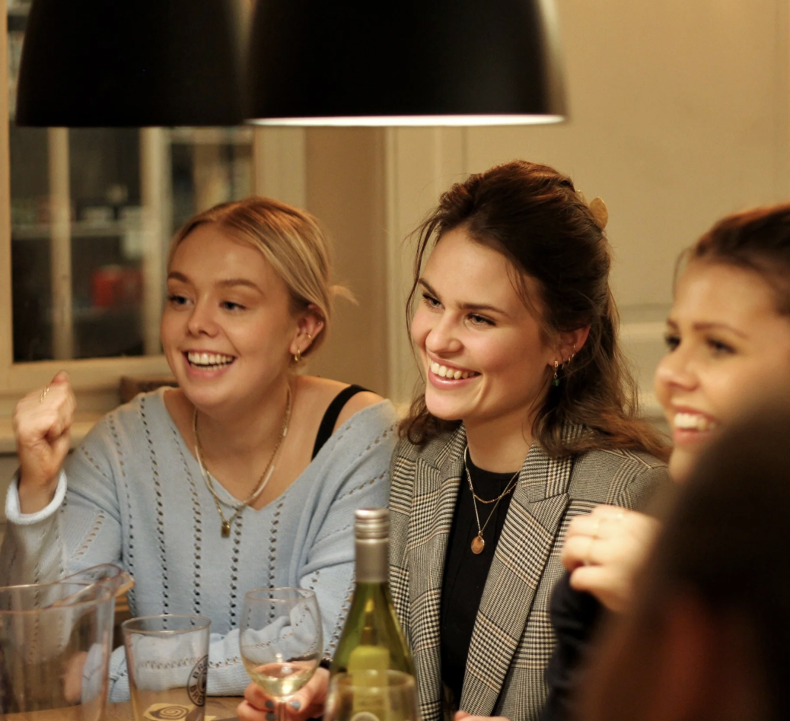

Spilcaféen er stedet, hvor du og dine venner kan hygge jer med brætspil. Uanset om I spiller sammen eller mod hinanden, er det ren sjov og fællesskab. Vi har spillene – I har hyggen!

Spilcaféen er stedet, hvor du og dine venner kan hygge jer med brætspil. Uanset om I spiller sammen eller mod hinanden, er det ren sjov og fællesskab. Vi har spillene – I har hyggen!
I november kan alle medlemmer tage en ven med ind og spille – helt gratis!
Er du ikke allerede medlem?
Vil du være sikker på, at der står et bord klar til jer, når I kommer? Så reserver jeres plads her, og gå direkte i gang med at spille!